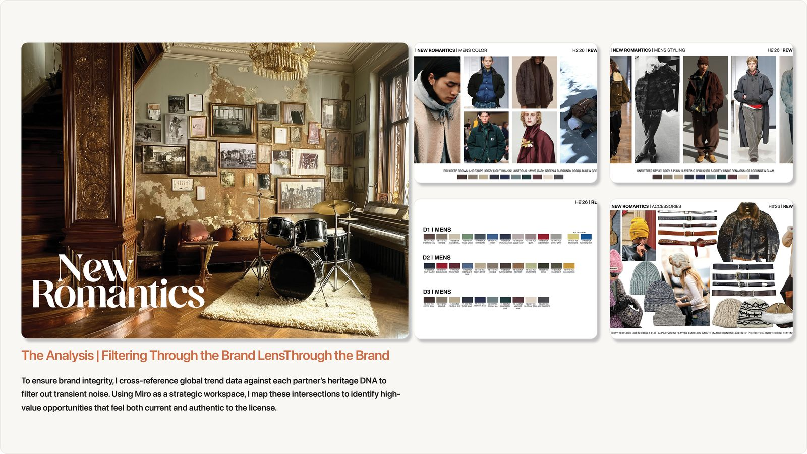
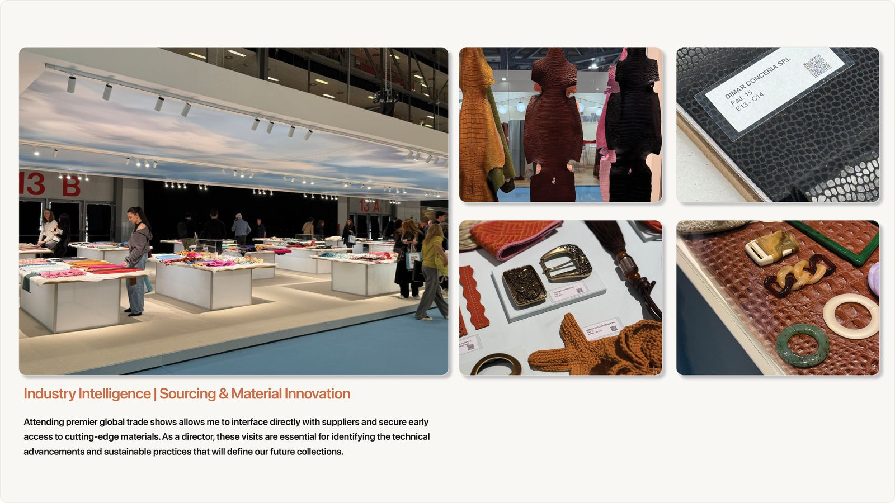

Setting Each Season’s Trend Direction
How I build a season’s trend direction: forecasting services, brand partner direction, real data and trips outside the bubble, pulled together with AI into one living trend site.
Traditional mood boards and trend presentations
For years, our trend decks were built by hand in Adobe Photoshop and InDesign. I would download and review trend reports from WGSN and other trend platforms, then spend hours searching for images to build each mood board, color story and material page.
The results were still beautiful trend decks. But they took a lot of time to make, and they were hard to go back and edit or add to later.


Every season starts with a point of view
Before a designer sketches a belt or a merchandiser builds a line plan, someone has to decide what the season is about: the colors, materials, silhouettes and stories that will matter 12 to 18 months from now.
Setting that direction is one of the most important calls a design and creative director makes. For a portfolio of licensed brands, it also has to work for every brand and every retail partner, so it has to be built on more than instinct.
Forecasting
WGSN and Future Snoops for the macro shifts.
Culture
Mainstream fashion and emerging trends.
Brand partners
Licensor trend direction combined with ours.
Data
Real data with the analytics team.
Field
Comp shopping and trend trips.
Synthesis
AI pulls it into one trend story.
Forecasting services, culture and brand partners
Research starts with the forecasting services, WGSN and Future Snoops, for the big shifts in color, materials and consumer mood. Everyone has access to the same reports, so the value comes from what you add to them.
I keep up with fashion as it happens, from mainstream runway and retail to emerging trends just starting to show up on social media, in smaller brands and on the street.
Our licensed brand partners also share their own seasonal trend direction. I combined theirs with our research, so our accessories fit each brand’s story while still reflecting what we saw in the market.



Checking instinct against real data
I worked with our analytics team to pull and analyze real data to spot trends early and confirm which ones had momentum. It keeps the direction honest: instinct says what feels new, and the data shows whether it’s actually growing.
Getting outside the bubble
Comp shopping and trend trips give you what no report can: seeing product in person, how it’s merchandised and what people are actually wearing.
I made a point of getting outside the bubble of where I live. A trend that feels like it’s everywhere in Chicago may not have reached other markets yet, and something taking off elsewhere may not be visible at home.


From a mountain of research to a few clear stories
By this point there’s a lot of information: service reports, partner direction, data and hundreds of photos. I used AI to help pull it together, sorting the research into themes and building a trend deck that’s relevant and useful for the design team internally and for our external partners.
The job is to turn a mountain of research into a few clear stories the whole team can act on.
On trend direction
From mood boards to a living trend site
For S/S 27, I used AI to code the forecast as an interactive website. It can be updated as new data comes in and adjusted by category or audience, like a dedicated neckwear view, so one source serves the design team, merchandising and our partners.
The season is built around three narratives, The Artisan, Retro Sport and Earth & Tech, with a macro color palette, key directions and key items.
| InDesign trend book | Interactive trend site | |
|---|---|---|
| Format | Mood boards in a fixed layout | A website with narratives, palettes and key items |
| Updates | Rebuilt by hand | Updated as new data comes in |
| Audience | One version | Views by category, like neckwear |
S/S 27 Men’s Accessories Trend Forecast
Live view of the S/S 27 forecast. Scroll inside the frame to explore.
The new AI-driven trend site was received incredibly well by partners and sales. It was interactive, full of information and easy to send as a live link. It also meant we no longer had to email large files, or compress them into smaller versions that lose quality.
Working with other design teams across the world, I helped show them what is possible and how they could change their own processes.